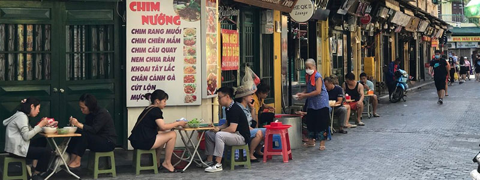

Dónde Comer
En este buscador, vas a poder conocer restaurantes, cafés y lugares donde disfrutar de la gastronomía tradicional de Hanoi
ver más
En este buscador, vas a poder conocer restaurantes, cafés y lugares donde disfrutar de la gastronomía tradicional de Hanoi
ver más
En Hanoi vas a encontrar platos típicos como el pho, el bun cha y el banh mi, además de una gran variedad de sabores tradicionales
ver más
Conocé los mercados y espacios donde podés disfrutar de la gastronomía, las compras y la cultura local de Hanoi
ver más